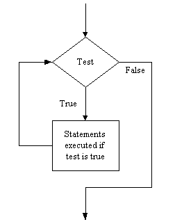

Some procedures require even more than SIPO-plus-Selection; they require the ability to repeat a group of instructions, e.g.
In all these cases the same instructions are carried out multiple times
(and sometimes on multiple items). The final control structure allows us to
specify the repetition of commands. Python provides two repetition statements
while, and for. We will consider while
here to get a flavour of repetition. The format of the while
statement is:
while test :
statements to repeatThe effect of this construct is to continue executing the statements "inside" the while, as long as the test is true, e.g.
while the temperature is low :fire the boiler
Although the italicized portions are not Python statements I hope this
gives you a sense of the construct. When the program reaches the
while statement it evaluates the test. If the test is false it
skips over the indented statements and continues with the next statement in
the program (i.e. if the temperature is not low we do not fire the boiler).
If it is true however it executes the statements, and then reevaluates the
test (i.e. if the temperature is low we fire the boiler and then check to see
if the temperature is still low). If the test is still true it executes the
statements and reevaluates the test (i.e. if the temperature is still low,
fire the boiler again). If the test is still true it executes the statements
and reevaluates the test. This continues until the test is false. Thus the
statements are done while the test is true.
Diagramatically this can be represented as,
